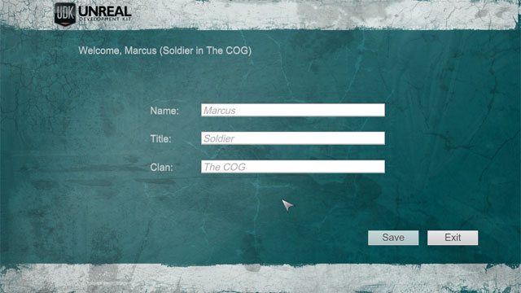
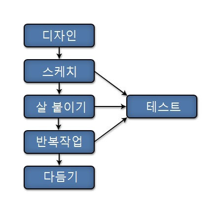

UDN
Search public documentation:
ScaleformGettingStartedKR
English Translation
日本語訳
中国翻译
Interested in the Unreal Engine?
Visit the Unreal Technology site.
Looking for jobs and company info?
Check out the Epic games site.
Questions about support via UDN?
Contact the UDN Staff
日本語訳
中国翻译
Interested in the Unreal Engine?
Visit the Unreal Technology site.
Looking for jobs and company info?
Check out the Epic games site.
Questions about support via UDN?
Contact the UDN Staff
스케일폼 GFx 시작하기
문서 변경내역: Jeff Wilson 작성. 홍성진 번역.
스케일폼 GFx 구성
- 어도비 플래시 프로페셔널에서 스케일폼 GFx 런처를 설치 - 스케일폼 GFx 런처를 사용하면 어도비 플래시 프로페셔널로 만든 씬을 UE3 로 임포트해서 게임을 실행시키지 않고도 씬을 테스트할 수 있습니다. 빠르고 효율적인 반복처리가 가능해 집니다.
- 어도비 플래시 프로페셔널에서 CLIK 라이브러리를 설치 - CLIK 라이브러리에는 미리 만들어진 위젯 세트가 들어 있으며, 게임 UI 에서 사용할 수 있습니다. 이 라이브러리는 어도비 플래시 프로페셔널에서 먼저 설치해야 씬에서 사용할 수 있습니다.
- 액션스크립트 개발용 코딩 환경 구성 - 플래시에는 액션스크립트 에디터가 내장되어 있습니다. 액션스크립트 코딩 환경은 그 외에도 몇 가지 있으며, 각각의 장단점이 있습니다. 요구에 가장 잘 들어맞는 것을 선택하면 작업방식에 더 나은 효율을 기대할 수 있습니다.
스케일폼 퀵스타트

스케일폼 작업방식

스케일폼을 사용하여 언리얼 엔진 3 게임에서 쓸 UI 를 만들 때의 작업방식 최적화 꼼수에 대해서는 Scaleform Workflow KR 페이지를 확인해 주시기 바랍니다.